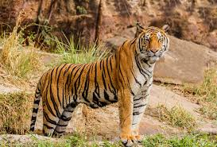

NATIONAL ANIMAL:
TIGER

Common Name: Royal Bengal Tiger
Scientific Name: Panthera tigris tigris
Adopted in: 1972
Found in: India, Nepal, Bangladesh, Myanmar, Sri Lanka
Habitat: Grasslands, forests, mangrove vegetation
Eating Habits: Carnivorous
Average weight: Male – 220 Kg; Female – 140 Kg
Average Length: Male – upto 3 m; Female - upto 2.6 m
Average Lifespan: 8-10 years in wild
Average Speed: 60km/h
Conservation Status: Endangered (IUCN Red List)
Current number: 2500 in 2016
 The tiger is found in various parts of the Indian Subcontinent including India, Bangladesh, Nepal, Myanmar and Sri Lanka. In India, it is found in most parts of the country except the north-eastern regions. They are found in the jungles of West Bengal, Madhya Pradesh, Uttarakhand, Andhra Pradesh, Karnataka and Odisha. India now is home to 70% of the world’s tiger population. As of 2016 a total number of 2500 adult or sub-adult tigers of 1.5 years or more are present in the various tiger reserves across India. Bandipur National Park in Karnataka has the highest number of Royal Bengal Tigers at 408 closely followed by Uttarakhand with340 tigers and Madhya Pradesh with 308.
The tiger is found in various parts of the Indian Subcontinent including India, Bangladesh, Nepal, Myanmar and Sri Lanka. In India, it is found in most parts of the country except the north-eastern regions. They are found in the jungles of West Bengal, Madhya Pradesh, Uttarakhand, Andhra Pradesh, Karnataka and Odisha. India now is home to 70% of the world’s tiger population. As of 2016 a total number of 2500 adult or sub-adult tigers of 1.5 years or more are present in the various tiger reserves across India. Bandipur National Park in Karnataka has the highest number of Royal Bengal Tigers at 408 closely followed by Uttarakhand with340 tigers and Madhya Pradesh with 308.
Habitat
The Royal Bengal Tigers occupy several habitats in India and may be found in grasslands and dry scrub land (Ranthambore in Rajasthan), tropical and subtropical rainforests (Corbett in Uttarakhand/Periyar in Kerala), mangroves (Sunderbans), both wet and dry deciduous forests (Kanha in Madhya Pradesh/Simlipal in Odisha).
Physical Traits
Royal Bengal Tigers are one of the most handsome and regal animals found in India. They have a coat of short hair, reddish brown to golden orange in color with vertical black stripes and a white underbelly. The eye color is yellow or amber with black pupils. Royal Bengal Tigers can also have a white coat with brown or black stripes and blue eye color. The white color of the coat is due to a mutation in the gene producing pigment pheomelanin and not due to albinism. The pattern of stripes on the coat is distinctive for each tiger and helps in their identification. Royal Bengal Tigers have muscular bodies with powerful fore limbs. They have large heads with a dense growth of fur around the lower jaw and long white whiskers. They have long canines measuring upto 10 cm and large retractable claws. They have padded paws, excellent vision, keen sense of smell and hearing.
The males grow upto 3 meters in length from nose to tail and weigh somewhere in between 180 to 300 Kg. The females of the species may weigh between 100-160 Kg and attain a length of upto 2.6 m. The largest Royal Bengal Tiger till date has weighed around 390 Kg.
In Legends and Culture
Tiger has always held a place of prominence in Indian culture. It is one of the animals to be featured in the famed Pashupati seal of the Indus Valley Civilization. In Hindu mythology and Vedic era, the tiger was a symbol of power. It was often depicted as the animal vehicle of the various forms of Goddess Durga. To endow an appropriate prominence as national animal, the Royal Bengal Tiger has been featured in Indian currency notes as well as postage stamps